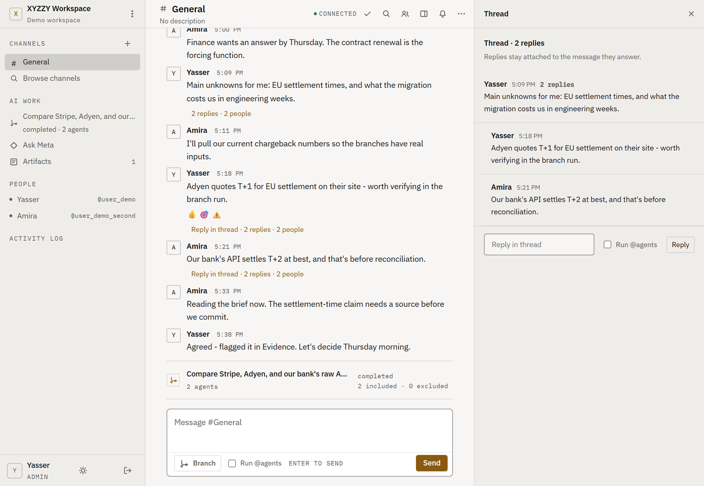
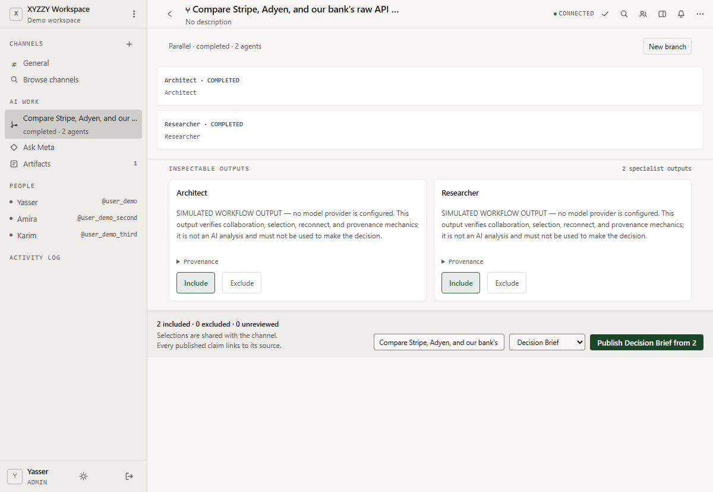
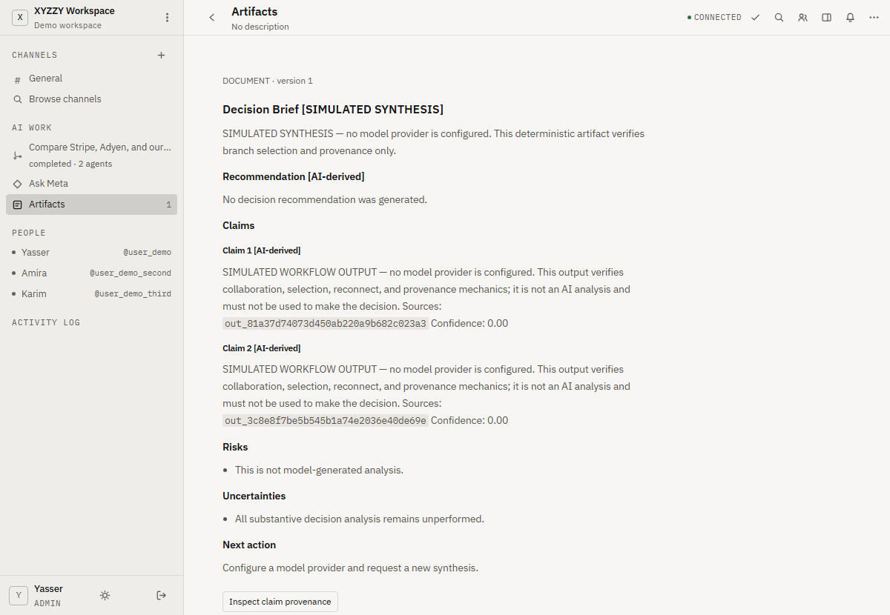
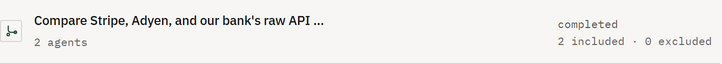

Multiplayer AI workspace
Decide with AI, together, and keep the receipts.
The conversation branches into parallel specialist runs. Your team includes or excludes each output, and the Decision Brief traces every claim to its run. Self-hosted, one Python process, Apache-2.0.
v0.4.0·Apache-2.0·1063 tests, Ruff and strict mypy in CI




Three views of one seeded room, captured from the demo the command below opens. No API key was set, so the specialist text reads SIMULATED; the branch, the verdicts and the brief are the real mechanics.
The loop
One conversation, several specialists at once, one accountable decision. Only what a person included reaches the brief.
01Ask in the room
The question is posed in a shared channel, with the people who will own the answer.
02Branch to specialists
Two or three specialist agents run at once on the same question, each in its own lane.
03Give every output a verdict
A person includes or excludes each output. Nothing is synthesized until every output has one.
04Publish the brief
The included outputs become a Decision Brief, and each claim in it links to the run that produced it.
- included by a person
- excluded, kept in the log, absent from the brief
Conversation, then parallel specialist runs, then include or exclude, then synthesis, then a Decision Brief with provenance.
What it guarantees
Each promise on its own row, beside the file that proves it.
-
Governed
An action that changes the room waits for a person. Task creation and artifact writes are marked as requiring approval, and nothing is written until a reviewer approves.
proof security/capabilities.py:249 tests/security/test_model_tool_gateway.py:240
-
Revocable mid-task
What an agent may do is re-read from the room at every step, never cached at the start. A grant withdrawn between two tool calls stops the second one.
proof services/steps.py:730 tests/security/test_continuation_authority.py:91
-
Tamper-evident
Every event is hashed against the one before it. Edit a row and the audit command reports the break at that row.
proof migrations/033_the_log_commits_to_its_past.sql security/audit.py:65 tests/security/test_event_chain.py:83 python -m multiplayer.manage app.db audit verify
-
Traceable
A Decision Brief's claims link to the outputs that produced them. The link reads back from the published version.
proof domain/models.py:977 tests/e2e/test_first_class_branches.py:214
-
Yours
One Python process and one SQLite file, self-hosted. Specialists can point at Ollama, LM Studio or any OpenAI-compatible server instead of a hosted API. Apache-2.0, source included.
proof server.py:514 db/connection.py:45 model_providers/openai_responses.py:244 LICENSE
-
Honest offline
With no API key configured, every specialist output is labelled SIMULATED. The loop still runs end to end, and nothing pretends to be a model.
proof model_providers/openai_responses.py:255 tests/regression/test_agent_outputs.py:60
Run it in one command
No account, no sign-up. It runs on your machine.
docker run -p 8000:8000 -e XYZZY_DEMO=1 ghcr.io/project-nexus-yr/xyzzyThen open http://localhost:8000. One click enters a seeded workspace already mid-decision, with no account and no config.
With no API key set, the specialist outputs are labelled SIMULATED; the loop is the same. From source: git clone the repo and run docker compose run --rm --service-ports demo, or one Python process as the README shows.